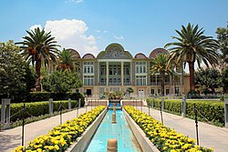

باغ ارم یک باغ ایرانی تاریخی در شهر شیراز است و شامل چند بنای تاریخی و باغ گیاهشناسی میشود. این باغ در گذشته در اختیار خانها و خانزادگان ایل خلج و قشقایی بوده سپس به بازرگان شیرازی نصیر الملک شیرازی فروخته شد. معماری کوشک این باغ بهدست نصیر الملک شیرازی صورت گرفت.
تاریخ ساخت و بنیانگذار اولیه باغ ارم شیراز، بهدرستی مشخص نیست؛ ولی توصیفهایی از آن در سفرنامههای متعلق به سده دهم و یازدهم هجری آمده است. این باغ در روزگار سلجوقیان و آل اینجو پابرجا بوده است. هرچند هیچ اطلاعاتی راجع به آن وجود ندارد؛ به غیر از یکی از غزلیات حافظ که از روی آن میتوان فهمید آل اینجو اختیار باغ را در دست داشتهاند.
برخی تاریخ ساخت این باغ را دوره سلجوقی میدانند؛ زیرا در آن روزگار، اتابک قراچه، حکمران فارس، اقدام به ساخت باغ تخت و چند باغ دیگر در شیراز کرده بود و ممکن است این باغ نیز به درخواست وی ساخته شده باشد.
